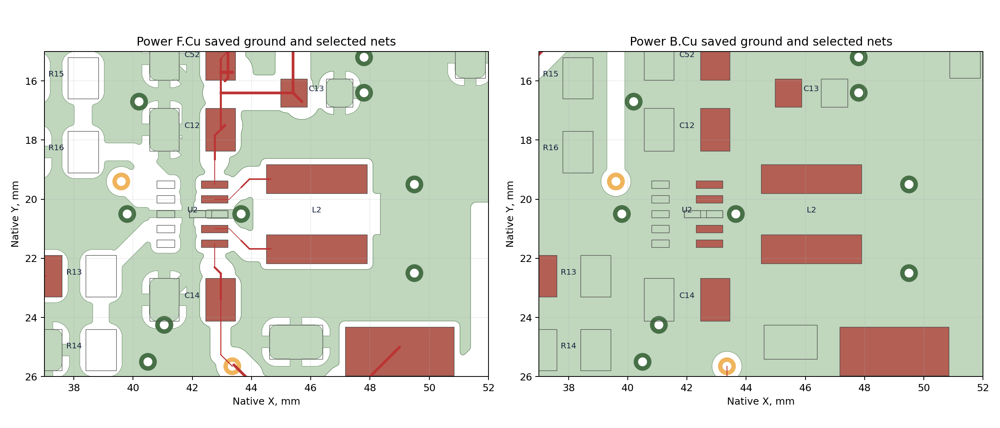
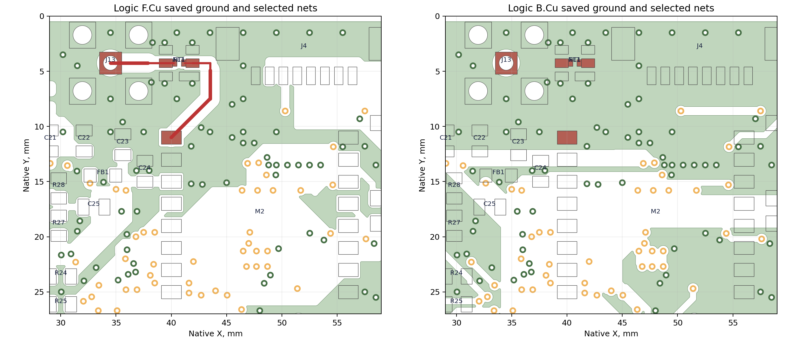

Независимый инженерный аудит · 13 октября 2026 · только текущая рабочая v2
Mesh Repeater 2.0: A3 с локальными изменениями
Безусловная готовность изделия не подтверждена. Два наиболее существенных риска LTO: балансиры с 2 Ω не гарантируют допустимый ток LMV431; при снятой батарее зарядник может вывести VIN TPS63802 за рабочие 5,5 В. Оба риска ранее согласованно оставлены; аудит не отменяет это решение и не считает его доказательством безопасности.
Также не закрыты паспорт аккумуляторов/панели, пуск и LC, USB через модифицированный клон, реальное сопряжение Ali-пары и противоречие GPS-карты. Подтверждены ошибки действующей документации (указатели A2 и направления UART) и несоответствие маркировки опубликованным минимальным нормам Резонита.
Свежие ERC/DRC чистые; функциональные связи/GPIO сохранены; силового обхода J11 нет; номинальные межплатные пересечения 0 мм³. Эти результаты относятся к CAD и не заменяют измерения питания, радио, температуры и реальную сборку.
Реестр замечаний
Критичность описывает возможные последствия; статус отдельно показывает доказанность. Измеренных отказов нет. Все предложения оставлены без внесения в проект. Предварительные E/F/M/R приложения объединены в стабильные V2-AUD; их пересечения не считаются дополнительными замечаниями.
Факт и требование. LMV431 непосредственно шунтирует ячейку через 2 Ω; отдельного силового ограничителя нет. Рекомендуемый ток катода ≤15 мА, абсолютный непрерывный предел 30 мА. Делитель каждой ячейки Rt=120 kΩ+2,49 kΩ, Rb=100 kΩ. Vz=Vref×(1+Rt/Rb)+Iref×Rt: при Vref=1,24 В и Iref=0,15 µA получается 2,77725 В. Порог без учёта входного тока 2,75888 В не является гарантированным значением.
Условия и последствия. При Vcell=2,75 В, Vref=1,215 В, Rt−0,1%, Rb+0,1%, Iref=0 (минимум не нормирован), Rs−1% идеализированный расчёт даёт Vz≈2,70028 В и Ik≈25,1 мА. При условных 2,85 В и типичных параметрах — около 36,4 мА. Эти оценки показывают отсутствие гарантированного запаса; за пределами нормированного режима модель шунта не предсказывает фактический ток или разрушение. Допустимость 2,85 В для неизвестной ячейки не утверждается. Контроль только суммы напряжений не ограничивает разбаланс каждой ячейки.
Минимальное предложение. После выбора ячейки обеспечить Ik≤15 мА на всех заявленных углах: рассчитанный балласт/ограничитель либо внешний силовой шунт, если нужен больший ток балансировки. Изменение 2 Ω требует отдельного согласования; здесь оно не внесено.
Проверка и приёмка. Два изолированных эмулятора ячеек, ток ограничен внешним источником. Измерять Vcell, ток R47/R51 и температуру U8/U9 в холоде/тепле и при максимальном зарядном токе. Приёмка: Ik≤15 мА; напряжение каждой ячейки в её паспорте; отсутствуют устойчивые колебания, перегрев и превышение абсолютных пределов.
Факт и требование. LTO R3=121 kΩ, R4=100 kΩ, 0,1%, ≤25 ppm/°C. Vreg=VFB×(1+R3/R4)+IFB×R3. При VFB=2,392…2,44 В, IFB≤300 nA и ±(0,1%+25 ppm×65°C) рассчитаны: CV тип 5,34541 В, верхний 5,44434 В. Это укладывается в 5,5 В в установившемся режиме. Однако CN3722 допускает при отсутствии/отсоединении батареи свой OVP 1,06…1,10×Vreg: тип 5,77304 В, верхний 5,98877 В. Рабочий VIN TPS≤5,5 В; абсолютные 6 В не разрешают работу выше 5,5 В.
Условия и последствия. SOLAR подключён, LTO батарея отсутствует/внезапно отсоединена, нагрузка мала. Снятие J11 не разрывает BAT_SYS→U2.10. Балансиры включены в проверенную цепь BAT_SYS→R71→BAT→R47→U8→MID→R51→U9→GND: их типовая сумма порогов около 5,5545 В уже выше 5,5 В. Статическая оценка при 5,773 В даёт около 53 мА через каждый LMV, но за пределами его нормированного режима не является прогнозом реального тока. Поэтому эти шунты нельзя считать гарантированным ограничителем. Возможны работа TPS вне паспорта и повреждение; достижение абсолютных 6 В не доказано.
Минимальное предложение. Для безусловного требования «до 5,5 В во всех режимах» нужна независимая отсечка/ограничение с учётом допусков и выбросов либо преобразователь с большим рабочим VIN. Пересчитать совместно с V2-AUD-001. Прежнее решение не добавлять защиту сейчас не изменено.
Проверка и приёмка. Эмулятор LTO, регулируемый SOLAR до подтверждённого холодного Voc, лёгкая и максимальная нагрузка, подключение/отключение батареи. Одновременно осциллограф U2.10–U2.8, BAT, MID и токи балансиров. Приёмка: U2.10≤5,5 В во всех заявленных режимах и сохранение пределов обеих ячеек/LMV. Начинать с отдельного внешнего контроля/ограничения BAT_SYS.
Происхождение. Унаследованный, ранее принятый риск; позднее требование «точно до 5,5 В в любой ситуации» и выбранная схема не образуют гарантии этого условия.
V2-AUD-003 · Нет данных для квалификации заряда и разряда конкретных аккумуляторов и панели
Высокая · Непроверенный вопрос из-за отсутствия данных
Место. POWER U1, R1/R56, R3/R4, R15/R16, TH1/U10/U11, Q1, J7/J8/J12; варианты Na-ion COLD, Na-ion NoCOLD, LTO 2S.
Факт и требование. Ни модель Na-ion/LTO ячеек, ни схема защиты пакета, ни Vmp/Voc и холодный Voc панели не закреплены. Основной ток CN тип 0,200/0,28=714 мА, угол VCS=215 mV и R1−1% даёт 775,6 мА без неизвестного TCR. COLD: 0,200/(1,8+0,28)=96,15 мА, верхний угол 104,4 мА. Это ток зарядного выхода, часть которого потребляет устройство. Na CV тип 3,91460 В, верхний 3,97693 В ниже согласованных 4,0 В в steady state.
Условия и последствия. TEMP U1.6 зафиксирован R9 на GND: штатный температурный контроль отключён. COLD снижает ток, а не запрещает заряд; TH1 под экраном измеряет температуру платы, которая может быть выше температуры внешней батареи. Горячее отключение по температуре ячейки не задано. EN измеряет BAT до R71: Na OFF тип 1,8056 В, рассчитанный разброс 1,7499…1,8695 В; приблизительно 1,74 В пользователь позднее согласовал, поэтому это не нарушение старого точного 1,8 В. LTO OFF 3,492…3,745 В относится к пакету, не к каждой ячейке. Q1 |VDS|30 В/|VGS|12 В, CN вход≤28 В, C8 35 В: неизвестный холодный Voc и выбросы не позволяют подтвердить запас.
Минимальное предложение. Закрепить паспорта ячеек/пакета и панели, допустимый ESR, зарядный ток по температуре, индивидуальные пределы LTO, предзаряд и допустимость CV. Если нужна температура ячейки — датчик на батарее либо подтверждённая тепловая связь. Корректировать схему только после установленного несоответствия.
Проверка и приёмка. Измерять ток J8/J12 и напряжение каждой ячейки, температуру батареи и TH1, SOLAR/VBAT на крайних заданных температурах, при бедной/максимальной инсоляции и NTC open/short. Приёмка по выбранному паспорту ячеек, а не общему названию химии; напряжения деталей в recommended range. Без паспортов критерии заряда завершить нельзя.
Происхождение. Ранее недостающие данные и принятый отказ от штатной температурной защиты; наличие COLD — поздняя согласованная опция, не отменяющая этот пробел.
V2-AUD-004 · LC, пуск и автономное восстановление после разряда требуют квалификации
Высокая · Обоснованный риск; не доказана неустойчивость преобразователя
Факт и требование. FB U2 снимается с SYS_PRE до R55=47 mΩ и двух 2,4 µH дросселей. R40/R41=22 mΩ стоят в ёмкостных ветвях, не последовательно нагрузке. Каждая банка содержит 10×100 µF TDK C4532X5R1A107M280KC (номинал 1000 µF); гарантированные ≥330 µF при 3,3 В с температурой/старением пока не подтверждены. Локально установлен C52=10 µF, он не резерв DNP. Минимум TI: Cin≥4 µF, Cout≥7 µF эффективных. Установленные резервы нельзя подменять потенциальными площадками C53/C54/C55.
Условия и последствия. Пассивный AC-расчёт 18 углов (L±30%, Cbank=330/1000 µF, R55/R40/R41 и DCR=10,5 mΩ, 10 Hz…100 kHz) даёт max transfer 1,392 при ~2,606 kHz и |Zout|max ~0,150 Ω при ~2,897 kHz. Источник идеален; TPS-loop/контакты/ESR/ESL/нагрузка не моделировались, поэтому самовозбуждение не доказано. DC только R55+2DCR при 0,5 А: 34 mV. Условный сценарий η=0,9, Voc ячейки=2,0 В, ESR=0,2 Ω, R71=0,1 Ω и выход=1,65 W даёт I≈1,097 А, BAT≈1,781 В ниже типового OFF, затем после отключения BAT восстанавливается выше ON≈1,986 В: возможны циклы EN. ESR/КПД не измерены. EN до R71, поэтому прямую положительную обратную связь через шунт не заявляем. Заряд только двух банков≥660 µF требует Q≥2,178 mC/E≥3,594 mJ; фактический inrush зависит от soft-start.
Минимальное предложение. Сначала подтвердить Ceff, реальный ток нагрузки/ESR источника и recovery. При установленном провале — уменьшить импеданс/подобрать ёмкости или демпфирование, изменить пусковой запас/гистерезис либо последовательность включения нагрузки. Изменение шунта требует новой калибровки INA и согласования.
Проверка и приёмка. Эмулятор с паспортным max ESR; BAT min/max, SOLAR on/off, банки заряжены/разряжены, TX+GPS, PFM/PWM. Снимать BAT у R15.1, BAT_SYS U2.10, EN U2.1, SYS_PRE, FILTER_OUT, M1.9/M2.3 относительно местной земли. Критерии: Cin≥4/Cout≥7 µF, каждый банк≥330 µF при 3,3 В в заданных условиях; VIN>1,8 В до PG согласно TI, затем паспортные напряжения потребителей; один автономный запуск после восстановления, без циклов EN/UVLO/reset и устойчивых колебаний.
Происхождение. Унаследованный LC и низковольтный Na режим, дополнительное падение согласованного INA219/R71 в v2. CAD-правильность не заменяет динамическую проверку.
V2-AUD-005 · USB должен питать всю сборку через неизвестный LDO клона; остаточные сигнальные токи не проверены
Высокая · Непроверенный вопрос и обоснованный риск
Место. POWER J11/NT2/J101, LOGIC J201/M1/M2/R21, POWER U2.MODE/R17; BAT_ADC R27/R28/C25.
Факт и требование. J11.1=FILTER_OUT, J11.2=SYS_3V3; NT2 соединяет SYS и RADIO только после J11. Снятый шунт действительно разрывает силовую медь LC→SYS. При USB на M1 питание SYS возвращается по J201.1/3 на POWER; NT2 питает RADIO по .5/7, а также INA219/RTC/watchdog/GPS. Следовательно, USB-LDO модифицированного Nice!Nano должен выдерживать полную нагрузку, а не только MCU. Точная микросхема/модификация клона и её бюджет документально не определены.
Условия и последствия. J11 установлен одновременно с USB — соединяются источники, возможен обратный поток. При J11 open остаются сигналы: RADIO_TXEN→R21=1 kΩ→MODE, R17=100 kΩ к GND; BAT→R27=2,2 MΩ→M1.8. Предел MODE 6 В указан независимо от VIN, поэтому USB 3,3 В при BAT=0 не объявлены absolute violation. Но Ioff MODE не гарантирован; слабую инжекцию и остаточное питание надо измерить. При BAT=4 В верхняя ограниченная оценка тока через R27<1,82 µA. Это не силовой обход J11.
Минимальное предложение. Описать фактическую аппаратную доработку и квалифицировать USB-LDO на полной нагрузке. При провале нужен рассчитанный источник/разделение источников. Сохранить единственный J11 и обязательный порядок снятия до USB; вмешательство сейчас не внесено.
Проверка и приёмка. J11 open; USB с BAT/SOLAR присутствующими и отсутствующими; TX+GPS максимальной длительности. Измерять M1.9, M2.3, USB ток/температуру LDO, BAT_SYS/FILTER_OUT/MODE при выключенной батарее, обратный ток в USB при BAT. Норма тока/нагрева и reverse current — из паспорта реального LDO; отсутствие отказов/reset и напряжения модулей в их рабочих диапазонах.
Происхождение. Прямое питание 3V3 и аппаратная доработка клона ранее согласованы; перенос J11/разделение ветвей A3 проверены заново.
V2-AUD-006 · Номинальная сборка проходит, гарантированные допуски разъёмов и крепежа не закрыты
Высокая · Непроверенный вопрос; невозможность реальной сборки не доказана
Место. POWER J101 (64,15;11), LOGIC J201 (64,15;49), SHIELD окно 17,2×6,8/R0,6; стойки 18/15 мм, M3×6, 20 шайб DIN433 0,5 мм; M1/M2/USB оболочки.
Факт и требование. Выбраны Ali E-SIMPO L35mm A3C6/2×6P и MTJ H8.5/2×6P, но нет документа изготовителя точной пары с окном ввода/максимальным пластиком/сечением штыря и допусками. Номинал G=18+15+1,52+3×0,50=36,02 мм; D=35−3−36,02+8,5=4,48 мм. До краёв окна при модельном пластике 15,64×5,0 мм остаётся 0,78/0,90 мм на сторону. Номинальный drill 1,02 мм против диагонали условного штыря 0,64×0,64=0,905 мм даёт лишь 0,115 мм диаметрального запаса.
Условия и последствия. Worst-case TD=TL+TPC+T18+T15+Tshield+3Twasher+THf неизвестен. Возможны неполный контакт/изгиб/касание фольги, хотя свежие STEP дают 0 пересечений. Верхний ввод резьбы=6−1,52−2×0,5=3,48 мм, нижний доступный=5−1,52−0,5=2,98 мм. После допуска верхней шпильки ±0,2 мм остаётся всего 0,28 мм на PCB/шайбы/неполные витки до проектного ≥3 мм; полезная глубина неизвестна. Высоты NiceNano/HT-RA62 и доступ Type-C/shunt/кабельных оболочек модельные, не гарантированные габариты. Каждый силовой контакт проверять на полный ток ветви: равное распределение по двум пинам не гарантировано.
Минимальное предложение. Квалифицировать купленную пару и размерный макет окна/стека; измерить предельные габариты, ввод, резьбу, реальные модули и кабели. Корректировать длину/высоту/drill/окно только при провале. При отсутствии гарантии изготовителя квалификация относится к проверенной партии.
Проверка и приёмка. Без питания собрать POWER→экран→LOGIC без притягивания разъёмов винтами; окно надевается через пластик свободно, пины не касаются фольги. Контакты 1:1 и NC8 изолированы; ввод внутри подтверждённого окна сопряжения. Верхние соединения ≥3 мм полных витков, нижняя гайка полностью зацеплена, крепёж не упирается до зажима. Затем полный ток каждой ветви/пики, падение контактов, многократная разборка по согласованному протоколу. USB/кнопки/J11/SMA доступны реальными ответными частями; ISP только после разборки.
Происхождение. Поздние вертикальные Ali-разъёмы и окно имеют приоритет над исходными IDC/отдельными отверстиями. Номинальная A3 геометрия подтверждена, реальные допуски — нет.
V2-AUD-007 · Официальные карты GPS расходятся по питанию контактов 6/7
Высокая · Непроверенный вопрос; неверная разводка A3 не доказана
Место. LOGIC J4.6=SYS_3V3 постоянно, J4.7=GPS_3V3 переключаемое; Q2/Q3/U7, P0.24 GPS_EN.
Факт и требование. Heltec MeshNode-T114_V2.1 P3 показывает .6=Ve_3V3 от U5, .7=VDD_nRF. Официальная карта аксессуара L76K показывает .6=VDD_3V3, .7=Ve_3V3 и совпадает с A3. У самого L76K вывод 6=V_BCKP, 8=VCC. Без точного аксессуара и карты двух концов кабеля произвольный выбор одного документа не разрешает противоречие.
Условия и последствия. Несоответствующий кабель может оставлять основное питание включённым, снимая backup, либо нарушить связь с отключённым U7: лишний расход, потеря горячего старта, отказ UART. Повреждение от двух 3,3-В цепей не доказано. Штатный UART GPIO A3 совпадает с исследованной прошивкой.
Минимальное предложение. Закрепить точный модуль/ревизию и прозвонку кабеля; затем при необходимости изменить только карту .6/.7 либо документировать требуемый перекрёстный кабель. До проверки не подключать неизвестный GPS.
Проверка и приёмка. Прозвонить J4.6→L76K V_BCKP и J4.7→VCC для выбранного аксессуара; затем GPS_EN on/off: измерять J4.6/7, V_BCKP/VCC, U7.8 и ток. Приёмка: backup сохраняется, основное питание управляется P0.24, UART работает при on, паразитное питание/ток при off в паспорте аксессуара.
Происхождение. Исходное требование аналогичного T114 сохранено, но его точная внешняя кабельная карта неоднозначна в первичных документах.
V2-AUD-008 · Несколько действующих указателей ведут к прежней комплектации A2
Средняя · Подтверждённый дефект документации и идентификации редакции
Факт и требование. NOTES называет актуальной V2_COMPONENT_BOM.csv прежней A2: там R1/R40/R41/R55=1206, R56=0805, J11 на LOGIC. Фактическая A3 имеет эти шесть силовых позиций в 2512 и J11 на POWER. Корректная V2_A3_COMPONENT_BOM.csv существует и согласована по 179 позициям. В native PCB POWER/LOGIC title_block остаётся V2.0-A2/12.10, SHIELD уже A3/13.10. Общий PDF manifest относится к A2. Действующее описание изменений всё ещё начинает с кабеля/J11 LOGIC/шести GND, хотя текущая вертикальная пара имеет три GND.
Условия и последствия. Закупка или заказ через неверный указатель приводит к несовместимым корпусам, неверной сборке/идентификации. Это одна причина — неполная актуализация указателей редакции; отдельные проявления объединены. Старые A2 PDF, которые README прямо помечает историческими, сами по себе не являются дефектом и не включены сюда.
Доказательства и предел вывода.SOFTWARE_BOM_checks.json; SOFTWARE_BOM_REPORT_RU.md; native файлы/CSV выше. 44 текущих экспортных артефакта привязаны к фактическим PCB своими SHA; A3 схемные PDF корректно показывают текущий J11/pinmap.
Минимальное предложение. При отдельной задаче обновить только действующие указатели, PCB title/date и манифесты текущего выпуска; исторические файлы сохранить с явной редакцией. Зафиксировать единый перечень основных A3 документов и BOM.
Проверка и приёмка. Dry-run сборщика: от README/NOTES получить только текущую BOM, 2512, J11 POWER, SYS1/3/RADIO5/7/GND2/4/6/NC8. Сверить title/manifest/source SHA всех выпускаемых файлов; старые документы не должны называться текущими.
Происхождение. Новая проблема согласованности A3 документации; опубликованная A2 не должна выдаваться за текущую рабочую редакцию.
V2-AUD-009 · Направления UART GPS в инструкции описаны наоборот
Средняя · Подтверждённый дефект только документации
Факт и требование. J4.4 GPS_RX_EXT описан как приём MCU, но фактически M1.20/P0.20 TX→U7.2→U7.6→J4.4. J4.5 GPS_TX_EXT описан как передачa MCU, но фактически J4.5→U7.5→U7.3→M1.19/P0.22 RX. Названия сетей со стороны GPS допустимы; неверна колонка роли MCU.
Условия и последствия. При изготовлении кабеля по роли MCU могут поменять RX/TX и получить неработающий UART. Сама схема, footprint buffer и проверенная прошивка направления сохраняют; менять GPIO не требуется.
Минимальное предложение. Исправить два описания на «TX MCU → RX GPS» и «TX GPS → RX MCU» с указанием стороны названия сети. Электрические связи оставить.
Проверка и приёмка. Прозвонить кабель и измерить UART TX/RX на J4.4/.5; loopback и реальные сообщения выбранного GPS. Инструкция должна однозначно совпадать со свежим XML.
Происхождение. Документация текущей A3; это не найденная перестановка портов FakeTec.
V2-AUD-010 · Маркировка ниже опубликованных минимальных норм Резонита
Средняя · Подтверждённое несоответствие опубликованной возможности; выбор сервиса условен
Место. F/B.Silkscreen всех трёх плат; ограничения .kicad_pro и фактические видимые тексты.
Факт и требование. Резонит публикует минимум высоты шрифта 1,0 мм и линии 0,15 мм. В native POWER min 0,8/0,12: 190 из 194 видимых текстовых объектов ниже одного из этих пределов; LOGIC 89/89; SHIELD min 0,85/0,13, 20/28. Это объекты текста, не количество компонентов/букв. Внутренние правила позволяют шрифт 0,8 и толщину 0,1, поэтому нулевой DRC не проверяет требования производства. При меди 35 µm минимальная POWER дорожка 0,15 мм требует опубликованного более тонкого техпроцесса; базовый предел 0,20 мм. Зазоры 0,20 и via drill/annular 0,30/0,15 мм укладываются в опубликованные базовые пределы.
Условия и последствия. При заказе без письменного согласования возможны исчезновение тонких надписей/коррекция CAM, ухудшение читаемости вариантов и перемычек. Тонкие дорожки не объявлены неизготовимыми: у Резонита предусмотрен соответствующий сервис. Производственный пакет был отложен, окончательный техпроцесс ещё не выбран.
Минимальное предложение. Для Резонита либо увеличить высоту/штрих с повторной компоновкой, либо получить письменное DFM-согласование; выбрать техпроцесс для фактических 0,15 мм или локально расширить трассы. В аудит правила и графика не менялись.
Проверка и приёмка. Свежий экспорт будущего комплекта, CAM preview и DFM выбранного сервиса: изготовитель подтверждает минимальные тексты и фактические width/clearance/drill/annular. Проверить читаемость на физическом масштабе и изготовленном образце; без согласования текущая маркировка не получает PASS для Резонита.
Происхождение. Внутреннее требование ≥0,8 мм выполнено, но оно мягче опубликованного производственного ограничения. Не ошибка электрической связности.
V2-AUD-011 · Штатный коэффициент BAT ADC не соответствует идеальному делителю 1:2
Средняя · Обоснованный риск точности; фактическая ошибка не измерена
Факт и требование. При reference=0,6 В, gain=1/6, 12 bit и делителе 1:2 идеальная шкала 2×3,6/4096=1,7578125 mV/count. Штатный множитель 1,815 даёт +3,2533%: условные 3,915 В отображаются как 4,042 В. Это расчёт номинального ADC, а не измеренная погрешность реального клона. Rth=1,1 MΩ, τ=Rth C25=110 ms; до 1% ~507 ms, до 0,1% ~760 ms. Статическая ошибка ΔVADC=Ileak×1,1 MΩ, на BAT вдвое больше. Конденсатор помогает выборке, но не устраняет DC-утечку.
Условия и последствия. Неоткалиброванная телеметрия батареи и высокий импеданс при утечках/загрязнении/температуре. Аппаратные CV и EN от программной шкалы не зависят, поэтому опасный заряд/отключение из одного коэффициента не выводится.
Минимальное предложение. Измерить передаточную характеристику и записать поддерживаемую настройку ADC multiplier. Сохранять GPIO и экономный делитель; снижать импеданс только если измеренный бюджет утечек не проходит.
Проверка и приёмка. В каждом варианте подать min/mid/max BAT, выдержать ≥5τ=0,55 с для сравнения с DMM; снять BAT у J8/J12, M1.8 и телеметрию при TX/off/USB. Согласовать допустимую точность заранее и проверить её во всём диапазоне температуры/источников. 5τ не является обещанием точности 0,1%.
Происхождение. Высокоомный делитель ранее согласован; калибровка прошивки/реального клона осталась незавершённой.
V2-AUD-012 · RF/BLE и подавление помех ещё не подтверждены измерениями
Средняя · Обоснованный риск; EMI/RF дефект не доказан
Место. LOGIC M2 ANT→FL1/NT1→J13; FB1/C23/C24; M1 BLE antenna; POWER U1/L1 и U2/L2; открытый промежуточный SHIELD.
Факт и требование. RF F.Cu ширины 1,3/0,8 мм, gap в серединах 0,250499 мм, противоположная GND присутствует; цифровой разрез под основными ANT-отрезками не найден. У SMA launch локальная осевая область ~1,25 мм занята сигнальной площадкой/clearance, вокруг есть земля и четыре анкера: это не доказанный разрыв возврата. Разные ширины/переходы/площадки и неизвестный stackup не подтверждают ровно 50 Ω. M2 band variant TBD должен быть закреплён как HF для ~869 MHz. C24 находится в 2,4 мм от M2.3, RADIO имеет локальную фильтрацию.
Условия и последствия. SHIELD — открытая пластина, а не замкнутый кожух. Длина switching net D1-K→L1 ~13,76 мм; TPS LX1/LX2 по 2,184 мм, в том числе короткие ~1,066 мм сегменты шириной 0,20 мм. Непрерывная земля и короткие локальные цепи помогают, но не гарантируют отсутствие наведённых шумов/нагрева. Экран под BLE клона может менять согласование. Общий импеданс GND/источника остаётся даже при отдельных положительных SYS/RADIO ветвях.
Минимальное предложение. Закрепить HF-ревизию/ANT-комплектацию модема, клон и stackup; проверить RF-модель/образец. Изменения трассы/экрана оправданы только найденным отклонением. Утверждения соответствия EMI-стандарту без заданного стандарта и испытаний не делать.
Проверка и приёмка. 50-Ω нагрузка SMA, фактический radio profile; измерять мощность/спектр и PER/чувствительность при PFM/PWM, зарядке off/max, экране fitted/removed, BLE при постоянной дистанции/ориентации. Отдельно осциллограммы M1/M2 при TX и нагрев силовых узлов. Численный бюджет допустимого ухудшения EMI/BLE/RF в ТЗ отсутствует — сначала определить протокол и предел, а не назначать произвольный PASS.
Происхождение. Унаследованная RF часть и новое экранирование/стек v2; нулевой DRC и BRep не доказывают радиопараметры.
V2-AUD-013 · Устанавливаемая SAW-опция требует отдельного температурного и радио-профиля
Критическая только при FL1 fitted и превышении мощности · Обоснованный условный риск; паспортные ограничения подтверждены
Место. LOGIC FL1 S869M000S003, NT1 под фильтром; стандартно FL1 DNP/NT1 замкнут.
Факт и требование. Abracon RevA, printed с.2: Source Power≤13 dBm, operating −10…+65°C, полоса 868…870 MHz. В проекте предупреждение 13 dBm есть, полный температурный предел опции не приведён. Исследованный ProMicro profile задаёт +22 dBm; его нельзя автоматически использовать с установленным фильтром. Хранение −40…+85°C не является рабочим диапазоном. Printed с.3 рекомендованный land drawing неоднозначен: 0,4 мм в верхнем ряду против 0,8 мм и общей геометрии; локальный footprint документирует выбор 0,8 мм. Корпус 3×3×1,3 мм и pin2 IN/pin5 OUT/остальные GND совпадают.
Условия и последствия. Базовая DNP сборка не нарушает паспорт отсутствующей детали. При монтаже FL1 и сохранённой высокой мощности возможна работа вне рейтинга/повреждение; при морозе ниже −10°C параметры не гарантированы. Это условие конкретной опции, а не подтверждённый отказ основной платы. Неоднозначность lands — отдельная часть квалификации именно этого узла, не доказанная неправильная пайка.
Минимальное предложение. Зафиксировать для FL1 профиль мощности/частоты/температуры до монтажа и получить подтверждение lands либо квалифицировать партию. Для более холодной/мощной работы выбрать другую документированную опцию; сейчас её не заменять.
Проверка и приёмка. После резки NT1 при снятом FL1 ANT_RF–ANT_SMA должны быть разомкнуты; после монтажа осмотр шести lands, VNA в 50 Ω: IL≤2,5 dB, ripple≤1 dB в 868…870 MHz в допустимом режиме. Мощность непосредственно на входе FL1≤13 dBm, температура детали −10…65°C. Эти критерии не квалифицируют всю антенну/морозную эксплуатацию.
Происхождение. Ранее согласованная опция без разрыва NT1 в базовом варианте; требует отдельной комплектации и программной настройки.
V2-AUD-014 · Комплект закупки LTO и часть сборочных позиций не завершены
Средняя · Непроверенный вопрос комплектности; новое наличие проверено
Факт и требование. 10 устанавливаемых LTO-позиций имеют MPN not selected/TBD. Точная комплектация двух рядов сокетов M1 с требуемой высотой не выделена закупочным набором. Основной товар ДАН 205451 (кабельный корпус L-KLS1-2.50-04-H для J12) на 13.10 отсутствует. Остаток 413 из прежней проверки 11.10 не является текущим наличием; число у рекомендованного товара на странице не принято за остаток основного. Остальные 13 новых основных карточек прочитаны; верхние стойки 188548 теперь 166 шт. вместо 168. GPS-комплект/M2 диапазон разобраны в V2-AUD-007/012, не повторяются как новые дефекты.
Условия и последствия. Можно заказать неполную LTO сборку/неподходящую точность или высоту. Отсутствие товара сегодня не доказывает ошибочность прежнего датированного наличия. NiceNano и модем по условию закупаются отдельно; произвольная замена их не предложена.
Минимальное предложение. Закрепить LTO MPN с рассчитанными допусками/ТКС/корпусами, полный набор сокетов и ответных частей; найти тот же J12 корпус у другого поставщика либо отдельно квалифицировать замену. Проверять наличие непосредственно перед закупкой.
Проверка и приёмка. Dry-run одного полного выбранного варианта: количество, Fit/DNP, маркировка, точность/TCR, mating, корпуса и обжимные контакты. Для J12 достаточно трёх предусмотренных контактов в четырёхполюсном корпусе; NC не превращать в случайную батарейную цепь.
Происхождение. Незавершённый этап подбора/закупки, а не выявленное нарушение native BOM A3.
V2-AUD-015 · Сборка основной прошивки и стендовая квалификация функций не завершены
Средняя · Непроверенный вопрос; ошибка среды сборки не является доказанным дефектом проекта
Место. Внешний MeshCore SHA a366955cb2f67b8e6842d4f00d2b6a554dddd88a, source v1.17.1, env ProMicro_repeater; design/watchdog_reference/main.c и HEX; текущая инструкция прошивки.
Факт и требование. GPIO радио/I²C/GPS, RTC0x68/INA2190x40 согласованы с этим source. Watchdog пересобран AVR GCC7.3.0: Flash406 B/RAM4 B, HEX совпал SHA256 8d38a4213ea91b9ad8d99638ac21ccfd80c2d75d24d1545856dba421195e5790. Полная MeshCore попытка реально выполнена в изолированном scratch: PIO6.2.0, nordicnrf52@11.0.0, ARM GCC7.2.1, framework1.10701.0+sha.d5413016 и зафиксированные библиотеки. Windows longpaths checkout обойдён только env процесса. SDK-компиляция затем остановилась на bits/c++config.h; отдельный probe воспроизвёл отказ без MeshCore. Canonical CPLUS_INCLUDE_PATH дал probe PASS и прошёл этот этап, но следующая сборка остановилась на assembler object paths 262–268 символов. HEX/ELF MCU не получены.
Условия и последствия. Не закреплён фактический прошиваемый бинарник/все runtime radio/ADC настройки. Нельзя обещать подтверждённый запуск этого клона. Watchdog отслеживает только TXEN: штатное молчание ~3 часа также вызывает reset, а собственный WDT ATtiny в interrupt-only не перезапускает зависший U6. Это сохранённое назначение, не новая ошибка. UART J5 зависит от environment: GPS использует Serial1, bridge environment его переназначает; одновременность не доказана. Измерений boot/RTC/GPS/INA/reset нет.
Минимальное предложение. В отдельной подготовленной среде с короткими путями завершить чистую сборку указанного SHA/environment, сохранить бинарник с SHA и lock зависимостей/runtime profile; затем квалифицировать установленный модуль. Алгоритм watchdog менять только отдельным согласованным решением, если испытания покажут несоответствие назначению.
Проверка и приёмка. Загрузка/boot/radio_init, ACK RTC0x68/INA0x40, GPS on/off, ADC/INA сравнение с эталоном, RTC время/OSF и сохранение от CR2032. Для watchdog измерять TXEN M2.5/7, U6.2 и MCU_RESET U6.5: TX сбрасывает ожидание, молчание вызывает ограниченный LOW и успешный restart. 1350×8 s=10800 s лишь номинал; реальную длительность установить по измеренной частоте. ISP3,3 В, fuses LF7B/HFFB, SCK≈10 kHz<128 kHz/4; readback. Не объявлять покрытым отказ самого U6.
Происхождение. Незавершённая воспроизводимость/испытания, не найденный дефект текущего GPIO-контракта. Прошивка v1.17.1 — проверенный source для сравнения, а не доказанно загруженный пользователем бинарник.
Необязательное улучшение
V2-AUD-016 · Можно уменьшить постоянное потребление INA219 программным режимом ожидания
Низкая · Необязательное улучшение
Место. POWER U12 INA219, штатный continuous режим драйвера MeshCore.
Факт и требование. INA219 потребляет типично 0,7 мА, до 1 мА от SYS_3V3 в continuous режиме. Добавление INA было согласовано; требование конкретной длительности автономности не задано. Этот расход не назван током сна всей системы.
Условия и последствия. При редких измерениях непрерывная работа расходует больше батареи, чем режим shutdown между выборками. Она не нарушает установленную схему и не блокирует изготовление.
Минимальное предложение. После обязательной квалификации оценить интервальные измерения/программный shutdown, если это совместимо с требуемой телеметрией. Сейчас прошивка не изменена.
Проверка и приёмка. Сравнить средний ток и восстановление конверсии/калибровки при одинаковом профиле; значения INA остаются корректными после wake. Критерий энергопотребления установить по реальной задаче автономности.
Происхождение. Оптимизация согласованного нового измерителя; не исправление подтверждённого дефекта.
Точный объект и применимое задание
Рабочий каталог C:\Users\Alksndr\Desktop\codex\Meshcore\v2, самостоятельный Git-репозиторий main, HEAD d1206d1cf134ac7ee1fb50b80c9488904241908c. Это опубликованный A2 плюс текущая незакоммиченная A3: на начале аудита 94 изменённых отслеживаемых файла и 349 неотслеживаемых файлов по porcelain-v2 (untracked=all). В проверку входят их фактические сохранённые байты. Одного HEAD недостаточно; снимок 2210 файлов и полного статуса, worktree diff и index diff фиксируют объект. Отсутствие коммита A3 не превращает рабочую редакцию в A2.
A3 определяется по содержимому: POWER все детали на F, шесть силовых резисторов 2512, J11 на POWER, NT2 и SYS/RADIO split; INA219/R71; вертикальные J101/J201; единое окно SHIELD; текущие схемные manifests, BOM A3 и экспорты. Неверный A2 title двух native PCB включён в V2-AUD-008. GitHub release v2.0-a2 и archive не использовались как текущие проекты. v1 не изменялась и отдельно не аудировалась; сравнение выполнено с локальной неизменной baseline/S4_16.
Три native проекта содержат .kicad_pro/.kicad_pcb; POWER и LOGIC имеют иерархические .kicad_sch. Локальные sym-lib-table/fp-lib-table, Meshcore.kicad_sym, Meshcore.pretty и Meshcore.3dshapes проверяются внутри каждого проекта; SHIELD использует Shield.pretty. model.json — вспомогательное представление, не замена native CAD. Состав: POWER123/LOGIC56/SHIELD6 footprints. Скрипты tools/cad, feature contracts и документация прочитаны по назначению; генераторы, меняющие проекты, не запускались. watchdog_reference — доступная собственная прошивка; основной MeshCore внешний, source скачан только в приложения.
Действуют AGENTS.md, исходное ТЗ v2 и последующие сообщения пользователя в этой беседе. Статус разработки: сохранённая рабочая A3, CAD и обзорные выгрузки готовы; не опубликованный новый производственный выпуск и не квалифицированный аппаратный образец. Производственный пакет ранее явно отложен; отсутствие текущих Gerber/drill/pos — незавершённый этап, а не доказанный электрический дефект.
Исходное положение
Позднее согласование / источник
Что проверялось сейчас
v2 как ветка прежнего репозитория
Пользователь: «версия 2.0 должна быть отдельным проектом»; AGENTS.md
Отдельный v2/.git, main; без операций публикации
J11 на LOGIC, кабельный межплатный соединитель
Пользователь: перенести J11 на POWER; последний ответ «Одна перемычка, после неё две ветви питания»
Текущих Gerber/drl/pos/ZIP вне archive/baseline до аудита нет; заказ отложен
Измерения / standards
Температура/EMI/radio/переходные процессы
Оценка отсутствующих протоколов
Не выполнялись; не заявляется соответствие неуказанному продуктовому стандарту
Нужен конкретный применимый стандарт и протокол, если требуется сертификация
Команды автоматических проверок
Исполняемый CLI C:/Program Files/KiCad/10.0/bin/kicad-cli.exe, версия 10.0.6. Входы — копии текущих трёх native проектов в ../audit/V2_ENGINEERING_AUDIT_A3_2026_10_13/CAD_CHECK, их исходные SHA сохранены. Для POWER/LOGIC:
SHIELD DRC без schematic-parity; схема для него не предусмотрена. Оба состояния заливок описаны отдельно: исходное сохранённое наполнение и новая заливка, выполненная инструментом на копии. Назад ничего не переносилось. Точные команды, return codes, числа ошибок, rules и before/after SHA: NATIVE_CHECKS.json; NATIVE_RUN.log. Функциональная проверка: SCHEMATIC_EQUIVALENCE_FRESH.json; проверка происхождения baseline: BASELINE_FRESH_BINDING.json.
Иллюстрации фактической меди (не измерение помех)

POWER: локальный TPS и противоположная земля

LOGIC: SMA/RF, локальная фильтрация, земля
Приоритет исправлений, недостающие данные и испытания
До безусловного включения LTO: решить001/002 с учётом сохранённого решения пользователя. Пока аппаратные ограничения приняты, программа ограничивается контролируемым стендом; нельзя обещать безопасность подключения/снятия настоящего LTO при SOLAR.
До заказа комплектов: квалифицировать Ali-пару/окно/drill и размерный стек006; выбрать техпроцесс/согласовать silk010; исправить действующие указатели008 и UARTинструкцию009 в отдельной задаче. Закрыть точные LTO/сокеты/кабельные закупки014.
До испытаний реальной химии: паспорта Na/LTO/пакета/панели003, тепловая связьдатчика, батарейные пределы/ESR; клон/USBбюджет005; GPSмодуль/кабель007.
На первом контролируемом образце: LCstartup/recovery004, успешная pinnedbuild и функции015, ADC/INA011, RF/BLE/EMI012. FL1 отдельно013; optionalINAoptimization016 только после обязательных проверок.
Нужные данные
Для чего
Где конкретные критерии
Паспорта Na-ion и обеих LTO ячеек, защита пакета, max ESR/ток/температура/допустимый CV
Выбор режимов, индивидуальная безопасность и recovery
001/003/004
Панель Vmp/Voc/темпкоэффициент и холодный max Voc, кабель/полярность
Выбранный fabservice/stackup/εr/tolerances/DFM, полный новый manufacturingpackage
Технологичность и RFгеометрия
010/012
Температурный/автономный/EMI/RFбюджеты и при необходимости нормативный стандарт
Численные критерии устойчивости и эффективности
003/004/012/016
Методы и точки каждого обязательного стендового опыта указаны в карточках замечаний. Нагрев, reverse current, радио, зарядный выброс и переходные процессы не измерены. Все численные расчёты имеют отдельные входы/допущения; пассивный AC не заменяет SPICE активного TPS или измерение loop gain. Испытания аккумуляторов начинать эмуляторами/ограниченным источником; ток/напряжение реальной ячейки проверяются только по её паспорту.
Готовность по трём этапам
Этап
Вывод
Основание и минимальная граница
Изготовление PCB
Текущий производственный выпуск не готов; CAD пригоден для дальнейшего выпуска прототипа
Нативная связность/контур/DRC проходят. Перед заказом:010DFM/техпроцесс,006пара/drill/окно и новый комплект, однозначнаяA3редакция008. Это не запрет изготовить лабораторныйпрототип после закрытия механики/DFM. Пауза manufacturingpackage сохранена.
Сборка
Номинальная конструкция осуществима, гарантированная сборка не квалифицирована
0номинальныхпересечений; mates/крепёж перечислены. Нужны реальнаяпара/резьба/модули006, точныепозиции014, правильнаяинструкция008/009. Na и LTO — разныеFit/Value; LTOтребует001/002 или явно ограниченногостенда.
Первое включение
Допустима поэтапная лабораторная проверка, безусловная готовность от реальной батареи/солнца/USB не подтверждена
Сначала полярность/прозвонка/эмулятор/ограниченныйисточник и контрольBAT_SYS; J11 поинструкции. На LTO безбатареи нельзя полагаться на5,5В. Реальныеcell/clone/LC/GPS/firmware требуют003–007/015. До замеров не утверждаются автономныйrecovery, холодныйзаряд, USB-TXbudget иRF/EMI.
Отсутствие текущего производственного ZIP и прошитого MCU бинарника — незавершённые этапы. Никаких плат, комплектов сборки или релизов в рамках аудита не заказывали и не публиковали.
Сохранность источников и Git
Проверка сохранности пройдена. 2210 существовавших файлов проверены SHA-256; изменений/удалений 0. HEAD/ветка, raw .git/index, логические index entries и прежние Git-status записи совпадают со снимком до аудита. Новые файлы допускаются только в этой папке приложений и в данном основном HTML-отчёте.
Доказательства: source_state_before.json, SOURCE_PRESERVATION_AFTER.json, git_status_before.z, git_index_entries_before.z. Аудит не менял схемы/PCB/модели/библиотеки/BOM/rules/прошивку/производственные файлы и не выполнял Git add/commit/push/checkout. Изолированные копии CAD/зависимости PIO/внешний source и расчёты лежат исключительно в приложениях. Логи сборки не приняты за успешный firmware release.
Скрипты NATIVE_AUDIT_RUN.py, MANUFACTURING_GEOMETRY.py, BUILD_MAIN_REPORT.py и специальные MECHANICAL_RF/SOFTWARE_BOM/ELECTRICAL проверки лежат рядом с результатами. Не запускать генераторы источников проекта для повторения read-only аудита. Ссылки на web — первичная документация; локальные карточки DAN/aliasPDF служат только идентификации/сохранённым доказательствам.
Аудит не является измерительным протоколом или сертификацией. Стабильные V2-AUD относятся только к указанным текущим SHA и локальным изменениям A3.